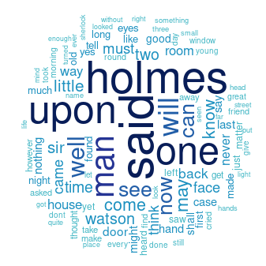

Word-clouds with R
What are the most used words in Sherlock Holmes? Let's make word-clouds and find out!
So I must admit that at first I tried this with the perl module Image::WordCloud. And it does ...ok, but not enough to be worthy of a journal post.
Enter the excellent language R!
I installed it with my operating system package manager. To make word-clouds, we need a couple additional libraries: "tm" (text mining) and "wordcloud" of course:
install.packages('tm')
install.packages('wordcloud')
To load them up, ready for use, do this:
library('tm')
library('wordcloud')
Read-in our text files as a corpus of documents:
docs <- Corpus(DirSource('~/Documents/lit/Sherlock-Holmes'))
Sanitize the text:
docs <- tm_map(docs, removeNumbers)
docs <- tm_map(docs, removePunctuation)
docs <- tm_map(docs, content_transformer(tolower))
docs <- tm_map(docs, removeWords, stopwords('english'))
Set the color palette to use:
pal <- brewer.pal(9, 'YlGnBu')
pal <- pal[-(1:4)]
Set the randomizer:
set.seed(123)
Set the filename to use:
png(file = 'Sherlock-wordcloud.png')
Create the cloud:
wordcloud(
words = docs,
scale = c(5, 0.1),
max.words = 100,
random.order = FALSE,
rot.per = 0.35,
use.r.layout = FALSE,
colors = pal
)
Close the graphics device:
dev.off()
And what is the result?

How about we just look at one book, "The Hound of the Baskervilles":